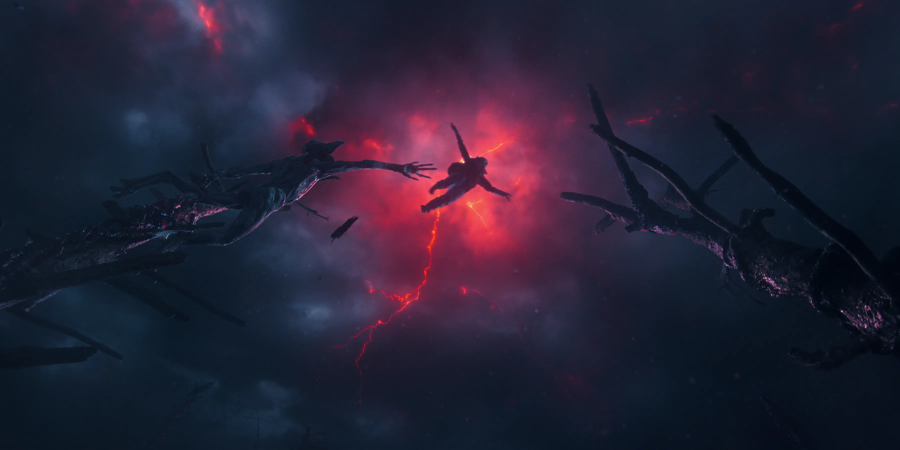
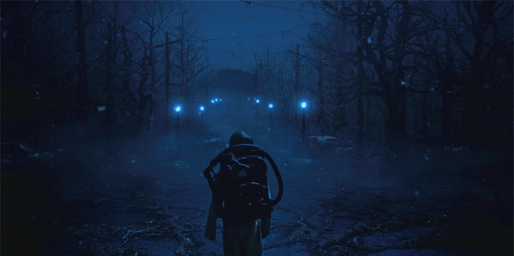
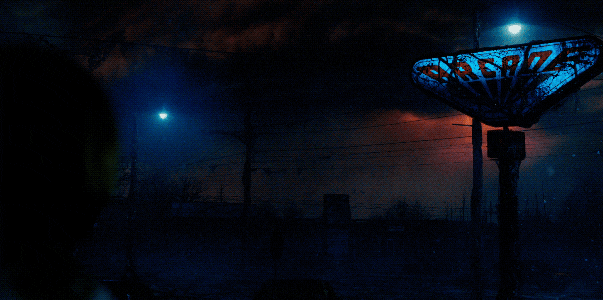
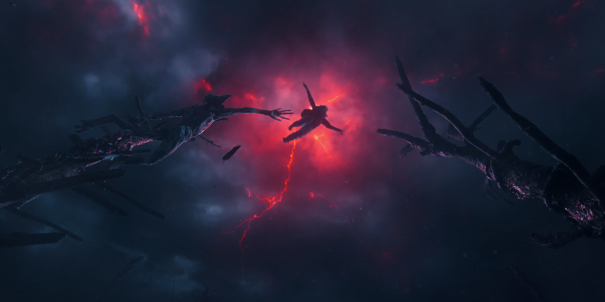
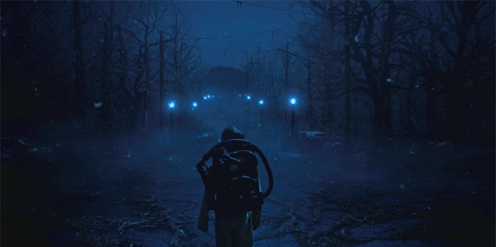
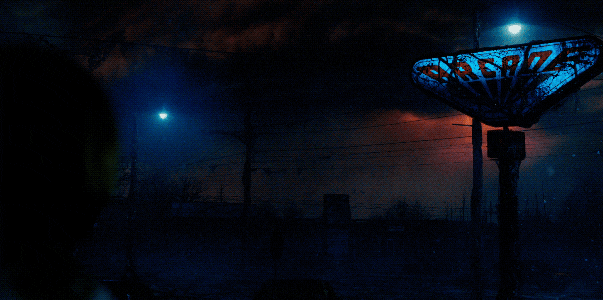

Bienvenido al
UPSIDE DOWN
UPSIDE DOWN
Bienvenido al
QUÉ ES ESTE MUNDO
Lo que debemos saber
Cuando hablamos del Upside Down, nos encontramos ante una dimensión paralela y oscura que existe junto a nuestro mundo, reflejando Hawkins pero de forma distorsionada y peligrosa. Llena de sombras, criaturas desconocidas y un ambiente opresivo, esta realidad alternativa esconde secretos que amenazan con infiltrarse en el mundo real.
En el Upside Down, las leyes de la naturaleza se alteran, el tiempo y el espacio parecen distorsionados, y cada paso representa un riesgo constante. Esta dimensión es tanto el origen de los horrores que acechan a Hawkins como el escenario donde se revelan los misterios más profundos de la serie.
 





CÓMO SURGE
El comienzo de la pesadilla
En la serie, el Upside Down se manifiesta a través de portales que conectan esta dimensión oscura con el mundo real. A lo largo de Hawkins, estos portales surgen cuando fuerzas sobrenaturales, experimentos del laboratorio o individuos con habilidades especiales, como Eleven, alteran la realidad. Si nos remontamos a la cuarta temporada, Eleven abre un portal involuntariamente mediante sus poderes, que permite que Henry, uno de los personajes, sea transportado al Upside Down, demostrando que esta dimensión no es solo un lugar separado, sino un reflejo peligroso y vivo del mundo real, accesible cuando se manipula la energía que la conecta con nuestra realidad.
LOS EFECTOS Y REGLAS DEL UPSIDE DOWN
Alteración del tiempo y el espacio
En el Upside Down, los lugares familiares aparecen distorsionados y las leyes de la física parecen cambiar. El tiempo puede sentirse más lento o detenido, y los recorridos no siempre coinciden con la realidad, generando confusión y peligro a quienes se aventuran allí.
La atmósfera del Upside Down refuerza esta sensación de irrealidad: una neblina constante invade el entorno, las estructuras se encuentran deterioradas y una materia orgánica desconocida cubre edificios y caminos. Esta dimensión parece reaccionar a las emociones y presencias humanas, volviéndose más hostil cuanto más tiempo se permanece en ella, como si el propio entorno actuara como un depredador silencioso que observa y espera.
Presencia de criaturas extrañas y energía hostil en su atmósfera
Este mundo está habitado por seres peligrosos, como el Demogorgon o el Mind Flayer, y rodeado de energía oscura que afecta a todo lo que entra. Cada paso representa un riesgo, y cualquier contacto con estas fuerzas puede resultar mortal.
Además de las criaturas visibles, el Upside Down está impregnado de una energía hostil que corrompe todo a su alrededor. Esta fuerza invisible debilita el cuerpo y la mente, altera el comportamiento de quienes la respiran y facilita la conexión de las entidades del otro lado con Hawkins. La atmósfera misma se convierte en un arma, haciendo que sobrevivir no dependa solo de escapar de los monstruos.
Conexión con el mundo real
El Upside Down está vinculado a nuestro mundo mediante portales que se abren bajo ciertas condiciones, ya sea por experimentos, fenómenos sobrenaturales o habilidades especiales como las de Eleven. Esta conexión significa que lo que ocurre en la dimensión paralela puede afectar directamente la realidad, transportando personas, objetos o incluso alterando eventos en Hawkins.
Esta conexión no es estable ni segura, y su existencia pone en riesgo el equilibrio entre ambos mundos. Los portales actúan como heridas en la realidad, permitiendo que la influencia del Upside Down se filtre en Hawkins. A medida que estas brechas se expanden, las barreras entre dimensiones se debilitan, facilitando invasiones, posesiones y la propagación de la oscuridad.